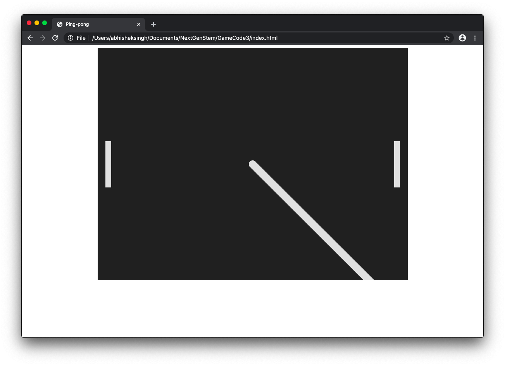

In this lesson we will move the ball and add collision with the walls.
Moving the ball is simple and only takes two lines of code in the draw() function.
function draw() {
drawBall();
drawPaddle(playerPaddle);
drawPaddle(opponentPaddle);
requestAnimationFrame(draw);
ballX += 4;
ballY += 4;
}
With this, we increase the ball's x and y coordinates by 4 pixels each frame. This will cause the ball to move toward the bottom right of the screen. If you launch the html file in a browser now, this is what you should see:
It looks like this because we keep drawing new circles without erasing the old ones. In order to create the illusion of a moving circle, we need to clear the whole canvas before each frame. We can do so easily like this:
function draw() {
context.clearRect(0, 0, canvas.width, canvas.height);
drawBall();
drawPaddle(playerPaddle);
drawPaddle(opponentPaddle);
requestAnimationFrame(draw);
ballX += 4;
ballY += 4;
}
This function clears a rectangle that takes up the entire canvas. Now the ball looks like it's moving! However, it keeps going off the screen. To keep it in bounds, we can create a collision function. First, we need to be able to change the amount that the ball's x and y coordinates change every frame, so let's create variables for those values and place them in the program:
let ballX = canvas.width / 2;
let ballY = canvas.height / 2;
let ballDX = 4;
let ballDY = 4;
...
function draw() {
context.clearRect(0, 0, canvas.width, canvas.height);
drawBall();
drawPaddle(playerPaddle);
drawPaddle(opponentPaddle);
requestAnimationFrame(draw);
ballX += ballDX;
ballY += ballDY;
}
The ballDX and ballDY variables store the number of pixels by which the x and y
values of the ball will respectively change each frame. They are named so because they represent the
difference in x and y every frame.
Now we can write a collision function. For now, we can write it so that the ballDY variable
changes sign at when the ball hits either the top or bottom wall:
function handleCollision() {
// Handle collision with the walls
if (ballY + ballDY < 0 || ballY + ballDY > canvas.height) {
ballDY = -ballDY;
}
}
...
function draw() {
context.clearRect(0, 0, canvas.width, canvas.height);
drawBall();
drawPaddle(playerPaddle);
drawPaddle(opponentPaddle);
handleCollision();
requestAnimationFrame(draw);
ballX += ballDX;
ballY += ballDY;
}
This will make it so that if the ball is about to go out of bounds on the top or bottom of the canvas (hence
the + ballDY), it will change its y direction and bounce off the wall, and that is what you
should see. However, the
ballY variable stores the y coordinate of the center of the ball, so the ball actually clips
into the wall a bit before bouncing off. There are many ways to fix this, but her is one that will make it
easier to understand the math. First, we need new ballTop and ballBottom variables
to store the y coordinates of the top and bottom of the ball. Then, we calculate the value of those
variables each time handleCollision() runs and do math with them.
let ballDX = 4;
let ballDY = 4;
let ballTop;
let ballBottom;
...
function handleCollision() {
ballTop = ballY - BALL_SIZE;
ballBottom = ballY + BALL_SIZE;
// Handle collision with the walls
if (ballTop + ballDY < 0 || ballBottom > canvas.height) {
ballDY = -ballDY;
}
}
Now the ball should bounce off the wall more convincingly. We haven't made the ball bounce off the left or right walls because when the ball touches those walls, the player or the opponent should gain points, and the ball should be reset to the center. We will implement that later.